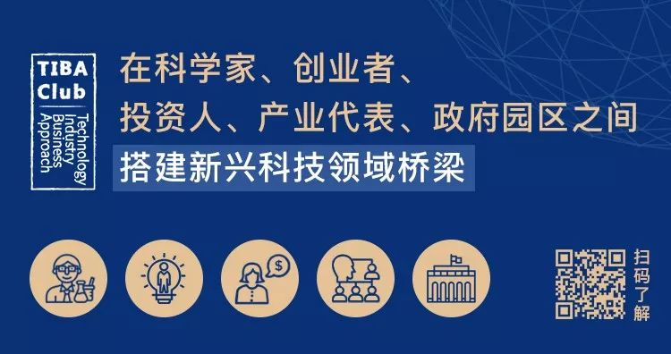
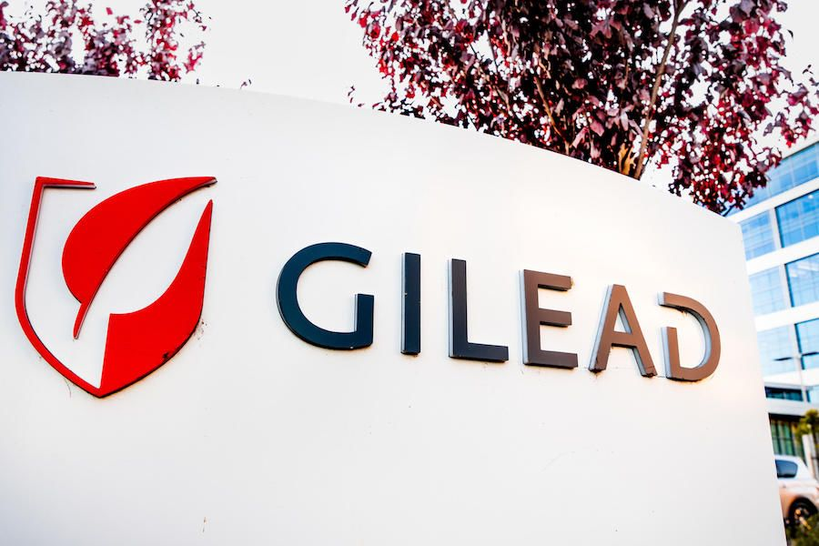
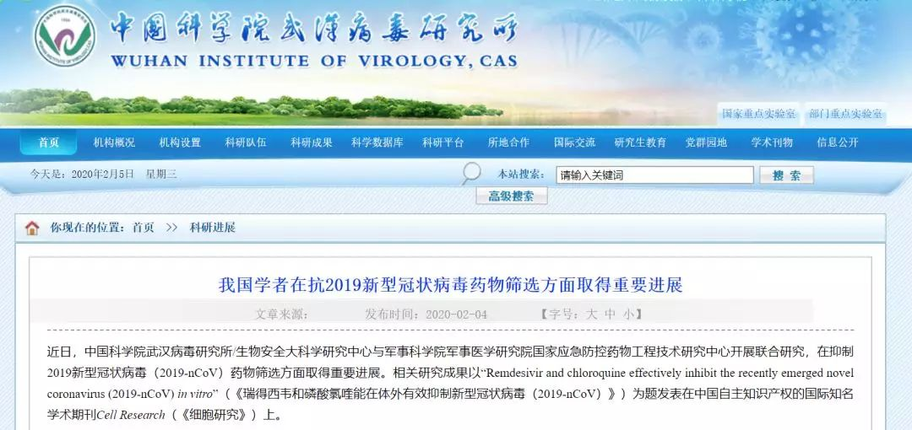

解药|武汉病毒所陷争议：为何此时宣布申请瑞德西韦新用途专利？
原文链接 备份链接 【财新网】（记者 邸宁 单玉晓 宿慧娴）抗新冠病毒药物有效性仍在验证中，专利角逐已经开始。2月4日，中国科学院武汉病毒研究所（下称武汉病毒研究所）官网发布消息称，1月21日，已就瑞德西韦“抗2019新型冠状病毒的用 …

一则来自中国科学院武汉病毒研究所的信息刷屏了。
2 月 4 日，这则发布于病毒所官网的《我国学者在抗 2019 新型冠状病毒药物筛选方面取得重要进展》称，中国科学院武汉病毒研究所与军事科学院的研究人员发现瑞德西韦（Remdesivir）在细胞水平上能有效抑制 2019-nCoV 的感染，并于 1 月 21 日申报了中国发明专利（抗 2019 新型冠状病毒的用途），并将通过 PCT（专利合作协定）途径进入全球主要国家。
值得注意的是，国内研究人员 1 月 21 日就申报了专利，而美国首例新冠病毒肺炎确诊是当地时间 1 月 20 日。考虑准备细胞研究的时间，病毒所和军事科学院研究人员的眼光可谓不浅。
这个研究以编辑通信（Letter to the Editor）的形式发表在期刊细胞研究（_Cell Research_）上。

图丨此次论文（来源：_Cell Research_）
疫情紧迫，这则研究进展本来是好消息，但申报专利的操作却吸引了舆论焦点。一时间，人们纷纷发问，美国公司吉利德准备援手中国防疫，研究人员抢注专利是不是要让吉利德求着他们才能让中国患者用上此药？
疑问还有不少，病毒所和军事科学院这个操作是否合规？国际惯例是怎样的？这个细胞试验结果的专利有多大实用价值？
原北京协和医学院教授、从事免疫治疗药物研发的王晨光博士告诉 DeepTech，病毒所这个团队的操作在技术上并无问题，只是在目前防疫第一的前提下，这样的操作容易引发争议。曾在多家跨国公司从事制药工作的陈达维博士则认为，这里可能没什么可争议的，但该专利也没有什么效力。
细胞试验而来的专利

这个细胞试验研究的作者有多人。通讯作者有 3 人，分别为武汉病毒所肖庚富研究员、军事医学研究院国家应急防控药物工程技术研究中心钟武研究员和武汉病毒所胡志红研究员。论文共同第一作者分别是武汉病毒所王曼丽研究员、军事医学研究院国家应急防控药物工程技术研究中心曹瑞源副研究员、武汉病毒所张磊砢副研究员、杨兴娄副研究员。刘佳、徐明月、石正丽等为共同作者。
这个研究评估了多种药物的细胞水平抗病毒效果。他们用不同浓度的 2019-nCoV 感染测试细胞并用药。研究显示，瑞德西韦不能阻止病毒进入细胞，而是在病毒进入细胞后发挥抑制病毒作用，这也符合其核酸类似物抗病毒的机制。

图 | 药物对新型冠状病毒（2019-nCoV）体外抗病毒活性测试。（来源：中科院病毒所）
在非洲绿猴肾细胞（Vero E6 细胞）上，瑞德西韦对 2019-nCoV 的半数有效浓度 EC50=0.77 uM（微摩尔每升），选择指数 SI 大于 129，后者是判断药物效果的安全范围的指标。作者称，这说明药物在细胞水平上能有效抑制 2019-nCoV 的感染，其在人体上的作用还有待临床验证。
瑞德西韦（Remdesivir，GS-5734）是 RNA 聚合酶抑制剂，一款新型核苷类似物抗病毒药物。目前在刚果（金）开展治疗埃博拉出血热的临床研究。研究发现，该药的效果不限于埃博拉病毒这类的丝状病毒，对于冠状病毒等多种病毒也有抑制效果。
此前的报道中，包括范德比尔特大学病毒学家马克 · 丹尼森（Mark Denison）、中国工程院院士、国家卫健委高级别专家组成员袁国勇、复旦大学附属上海市公共卫生临床中心教授卢洪洲纷纷表示看好该药在抗新冠病毒的应用前景。
吉利德也表示正在配合中国的卫生部门开展一项随机、对照试验，以确定使用瑞德西韦治疗 2019-nCoV 感染者是否安全和有效。这款药物已经运抵中国。
据悉，在中国启动的研究由中日友好医院副院长、呼吸与危重症医学科主任曹彬牵头，是一项三期、随机、双盲、安慰剂对照试验，入组轻、中度新冠肺炎患者，总样本量 270 例。该试验将在武汉疫区开展。按计划，该研究预计于 4 月 27 日结束。
病毒所和军事科学院的研究人员宣称，对在中国尚未上市，且具有知识产权壁垒的药物瑞德西韦，依据国际惯例，从保护国家利益的角度出发，在 1 月 21 日申报了中国发明专利（抗 2019 新型冠状病毒的用途），并将通过 PCT 途径进入全球主要国家。“如果国外相关企业有意向为我国疫情防控做出贡献，我们双方一致同意在国家需要的情况下，暂不要求实施专利所主张的权利，希望和国外制药公司共同协作为疫情防控尽绵薄之力。”
药物研发专家解读

图 | 吉利德正在配合中国的卫生部门开展一项随机、对照试验，以确定使用瑞德西韦治疗 2019-nCoV 感染者是否安全和有效。（来源：吉利德）
瑞德西韦的研发初衷是用来抗埃博拉病毒，此次来抗新冠肺炎是该药的新应用，这正是病毒所和军事科学院的研究人员申请此专利的出发点。对此我们专访了曾在多家跨国公司从事制药工作的陈达维博士和原北京协和医学院教授、从事免疫治疗药物研发的王晨光博士。
首先我们就专利归属及申请权利向两位专家进行了求证，即病毒所和军事科学院得到瑞德西韦的途径会不会影响其申请专利？如果是吉利德捐赠，那么他们是否有申请专利的权利？
陈达维博士表示，一般情况下，制药公司是欢迎研究机构来用其产品做一些研究的，因为后者可以帮公司发现一些新的药物数据。这个药也不一定从公司要，有时市场上也能买到。如果自己合成，那就侵权了。
至于专利问题，这要看他们之间的协议。从公司得到化合物做临床前试验的一般途径是通过学术中心与公司之间的材料转让协议（MTA）。协议中对双方申请专利的权利会有明确规定。公司一般要求研究机构说明索取化合物的用途，为什么要特定的量，但不会收取费用。如果研究机构要做的研究对公司利益没有潜在冲突或威胁，通常会批准。
各家制药公司对于专利的尺度有一些区别。对于一些临床前研究，有的制药公司可能允许其他机构申请自己的专利，但对于临床研究，几乎没有哪家制药公司允许其他机构申请其专利。
而王晨光博士则认为，他们没必要依靠吉利德捐赠。因为瑞德西韦的分子结构早已公开，那么就很容易合成出来，合成技术上没有障碍。是否申请专利跟该药的来源并无关系，无论是否为吉利德捐赠，也不影响其申请专利。
另外一个问题是公众最为关心的该药物目前还没有临床试验结果，而仅仅依靠细胞试验的结果，这种条件下所申请的专利有多大效力？
对于这个问题，陈达维博士认为这是可以申请专利的。但对最终的新的临床应用应该没什么影响。如果吉利德要想做这方面的临床研究，可以引用病毒所和军事科学院的细胞试验研究。也就是说，后者并不拥有该药在临床上的专利权。
此外，他还表示，除了吉利德公司，其他机构或个人无权用此药做临床试验，何况此药尚未上市。如果其他机构与吉利德合作进行临床试验（这很普遍，很多时候临床机构还会向制药公司索要一些经费），制药公司有主动权，合作的研究机构是无法占有这个专利的。
这里可能不存在合规性问题，但专利本身也没有什么效力。吉利德公司之外的研究机构用还没有批准的药做动物或细胞实验非常常见。
但王晨光博士的观点则更为犀利，他认为仅仅有细胞试验结果而宣称有某种治疗作用的专利，如果不提供临床试验结果，那么其专利效力是非常弱的，就得不到很好的保护。但病毒所申请了这个专利之后，其他人或机构也就无法再申请相关专利。
当然，病毒所的这个专利将来如果有应用的话，也无法绕开吉利德，毕竟分子结构是人家的专利。只是吉利德要想在中国使用相关专利就要去求病毒所和军事科学院。因为他们这个专利保护的是瑞德西韦这个应用。
这里病毒所和军事科学院的研究占据了优势，毕竟新冠病毒主要在中国爆发，那么也就具备天然的研究优势。所以他们能够抢注这个专利。他们还申请了专利合作协定（PCT），那么就可以向全球各个国家地区来申请这个专利。
总的来说，他们这个操作在技术上和法规上确实没什么问题，只是在当下，这样的行为存在争议，已经不再是简单的知识产权保护问题了。
此外，还有一个非常现实的问题，对于吉利德目前已经拥有了该药的分子结构专利，病毒所和军事科学院的研究人员还能申请到什么样的专利，以及吉利德公司可能会有什么反应？王晨光博士则给出了这样的答复：
他们可以申请联合用药的专利，也可以申请该药在其他用途的专利。如果吉利德没有申报瑞德西韦在新冠病毒的用药专利，其他人也是可以申报的。如果申报瑞德西韦的联合用药专利，也没有问题。只要吉利德要做新冠病毒的治疗，同样也要遵循这个规则。
当然，新冠病毒可能会像 SARS 病毒一样一去不返，那么这个专利就对于吉利德来说不算什么。
最后，DeepTech 也针对之前有报道称美国总统特朗普要求吉利德公开瑞德西韦分子结构的一事向王晨光博士进行了求证。他认为这其实是媒体的误读。吉利德公开瑞德西韦分子结构与否、是否捐赠药物、是否授权都是公司行为，特朗普是无权干涉的。
律师解读：武汉病毒研究所专利或难被授权
现有资料显示，吉利德已经将瑞德西韦的化合物结构与治疗冠状病毒的用途都申请了专利。
其中，化合物的专利已经获得授权，公吿号为 CN103052631B，用途专利正在申请之中，公开号为 CN108348526A，且这个用途专利描述的是瑞德西韦用于所有冠状病毒的用途，也就是说，吉利德已经申请了这个 “锤子” 用在冠状病毒这一种类 “钉子” 的用途专利。
情况似乎一时间变得纷繁复杂。对此，DeepTech 联系立方律师事务所合伙人李春晅律师进行了解读。他表示，武汉病毒所的新专利要获得授权，需要证明他们的新冠病毒新用途具有新颖性、创造性和实用性。
且根据专利审查指南中对化学产品用途发明的新颖性的定义，一种新产品的用途发明由于该产品是新的而自然具有新颖性。
对于涉及化学产品的医药用途发明，其新颖性审查应考虑以下方面：
（一）新用途与原已知用途是否实质上不同。仅仅表述形式不同而实质上属于相同用途的发明不具备新颖性。
（二）新用途是否被原已知用途的作用机理、药理作用所直接揭示。与原作用机理或者药理作用直接等同的用途不具有新颖性。
（三）新用途是否属于原已知用途的上位概念。已知下位用途可以破坏上位用途的新颖性。
（四）给药对象、给药方式、途径、用量及时间间隔等与使用有关的特征是否对制药过程具有限定作用。仅仅体现在用药过程中的区别特征不能使该用途具有新颖性。
鉴于现有的公开信息难以证明武汉病毒研究所的方案和吉利德方案的有区别，李春晅认为，武汉病毒研究所的专利申请较难被授权。

（来源：武汉病毒研究所）
以下为 QA：
DeepTech：武汉病毒研究所此次抢注专利再到获得授权的完整流程是什么？
李春晅：专利没有所谓的 “抢注” 说法，专利是申请 - 审批制。
此前，全球在专利申请方面主要有两种制度，一种是美国等少数国家的先发明制，即，两个以上的申请人分别就同样的发明创造申请专利，专利权授予最先发明的人。另一种就是其他国家的先申请制，谁先提交申请，专利归谁。后来美国 AIA 发明法案也更改为发明人先申请制。专利申请需要经过审批才能获取授权，最终相同的专利申请会授权给第一个申请人。
专利没有抢注的说法。专利授权注重的是三个方面，新颖性、创造性和实用性，现在主要考虑的是新颖性和创造性，只要一个技术方案在申请之前没有被公开过，那么就有被授权的可能性。除了这三个性质之外，还有其他的文本性授权条件每个国家会有所差异，但是审查标准基本上是趋同的。
一般来说，发明专利申请到获得授权平均时间大约是三年左右。药品专利是典型的发明专利，它的时间一般是三年左右。
DeepTech：从专利的角度来看，武汉所此次所为是合法的吗？
李春晅：武汉所做的事情是完全合法的。先撇开授权的问题，即使这一专利授权了，它在实施上还有很多的问题。
第一，在治疗上，对病人采取治疗方法时，是不受专利法影响的，专利法也不保护疾病的治疗和诊断方法。
美国人已经在中国申请了药品专利，武汉病毒研究所在治疗新冠病毒肺炎的应用时，必须拿到美国人的许可，否则可能存在侵权的风险。
美国专利权人现在没有所谓的停止侵权的诉求，不代表他就没有权利。权利始终是在美国专利权人的手里。
原来这种药是用来治疗埃博拉病毒的，武汉病毒研究所发现了它新的用途，即可以用来治疗新冠病毒，然后申请相关专利，理论上来说，如果这一专利被授权，以后美国公司如果要用这种药物治疗新冠病毒是需要获得武汉所的许可的。
无论有没有疫情，这种案例其实是很常见的。
举例来说，甲做出来一个东西，由于研发成本或者其他原因限制，它只能实现 A 用途，现在有乙也进行了相关研究，发现它能实现 B 用途。甲只能享受 A 用途带来的利益，不能享受 B 用途带来的利益。这也是法律允许有第二用途专利的原因。

图丨 remdesivir 结构式，目前处于抗埃博拉病毒研究的临床三期（来源：吉利德）
DeepTech：现在的信息显示，该药物对新冠病毒有效也只是在体外细胞有效，不需要更多实验就可以申请专利了吗？
李春晅：专利申请保护的是技术方案，它要求技术方案理论上可行就行。另外，目前药物专利在申请实践中，其申请文件是必须有实验数据支持的，否则是不能得到授权的，这是专利申请的文本性要求。
目前的问题是，无论这一专利有没有被授权，武汉病毒研究所已经提出并经各方报道公开了这种技术方案，以后其他人都不能申请这一药物的新冠病毒治疗的用途专利。技术方案公开之后，其他人没有新颖性和创造性就不能得到授权。
DeepTech：武汉病毒研究所申请这一专利会对吉利德造成怎样的影响？
李春晅：吉利德公司不能申请该药物第二用途专利，但是根据现在获得的信息，吉利德公司的申请的权利要求已经包括了相关用途，不受武汉病毒所的影响。
DeepTech：武汉病毒研究所这一做法被一些人认为是相当于把别人的成果据为己有。
李春晅：首先，武汉药物研究所并不违法，情理是情理，法律是法律。甚至情理上也是正常的，因为我们并不清楚武汉所为此付出了哪些劳动。
-End-
DeepTech关于武汉肺炎的系列报道（上下滑动可见全部报道）：
新冠病毒疫苗上市最短6个月，最长10年｜独家采访美国生物医疗巨头Moderna
新冠病毒阴谋论疑云：“病毒非自然形成”，印度学者研究被哈佛大牛批“不靠谱”
双黄连一夜全网脱销，美国首例病情缓解则靠这个药！中国有望能用上
世卫组织正式将武汉肺炎定性为“国际关注的突发公共卫生事件”！
病毒“人传人”去年12月中旬或已发生？武汉肺炎传播性、致死率暂低于SARS，两大医学顶刊发布相关患者数据
抗击武汉肺炎最佳药物现身？《科学》杂志：一种在研抗埃博拉药物最有希望
无症状病例已现！到底是谁把新冠病毒带到了武汉？科学家加速病毒溯源
疫苗研发能否跑赢武汉肺炎？mRNA技术“高调登场”，全球科研力量投入新型疫苗研发
德国教授真有武汉肺炎“神药”？“最强抑制剂”从未进行人体测试！全球学者投入武汉肺炎治疗技术战
武汉封城能否防止超级传播者？世卫：定性“突发公共卫生事件”仍需更多信息
武汉肺炎首场国家新闻发布会：病毒存在变异可能，疫情存在进一步扩散风险
武汉实施进出管控！迄今肺炎疫情最权威声音，钟南山表示须警惕春运超级传播者

原文链接 备份链接 【财新网】（记者 邸宁 单玉晓 宿慧娴）抗新冠病毒药物有效性仍在验证中，专利角逐已经开始。2月4日，中国科学院武汉病毒研究所（下称武汉病毒研究所）官网发布消息称，1月21日，已就瑞德西韦“抗2019新型冠状病毒的用 …
原文链接 备份链接 新冠病毒肺炎的临床治疗有了新进展：一款未上市的药物在一名美国重症患者身上使用后，症状得到了明显缓解。这款叫做瑞德西韦（remdesivir）的药物也一夜之间受到了前所未有的关注，几天之内中国药监局确认受理瑞德西韦的临 …
原文链接 备份链接 瑞德西韦已在我国进入临床测试阶段，《潜望》从接近该临床试验人员处获悉，瑞德西韦试验的第一例患者从重症到恢复，用时不到24小时，“效果很好”。 《潜望》 作者 纪振宇 刘鹏 一起基于“同情用药”准则下的治愈案例，让美国制 …
原文链接 备份链接 一 我叫李丰杰，我在武汉送外卖。 我本来想过年留在武汉值班跑单，但是腊月二十九那天早上一出门，我妈就一直给我打电话，每隔十分钟或者半个小时就打一次，强烈要求我回家，说武汉出现了新型冠状病毒，再不回来就回不来了。搞得我没 …
原文链接 备份链接 童言是生活在新加坡的三明治专栏作者。自1月23日确诊第一例“新型冠状病毒肺炎”病例以来，目前新加坡已确诊18个病例，在海外确诊数据中排名第三，仅次于日本、泰国。 这场“肺炎”疫情牵动着许多在海外中国人的心绪。华人群体 …